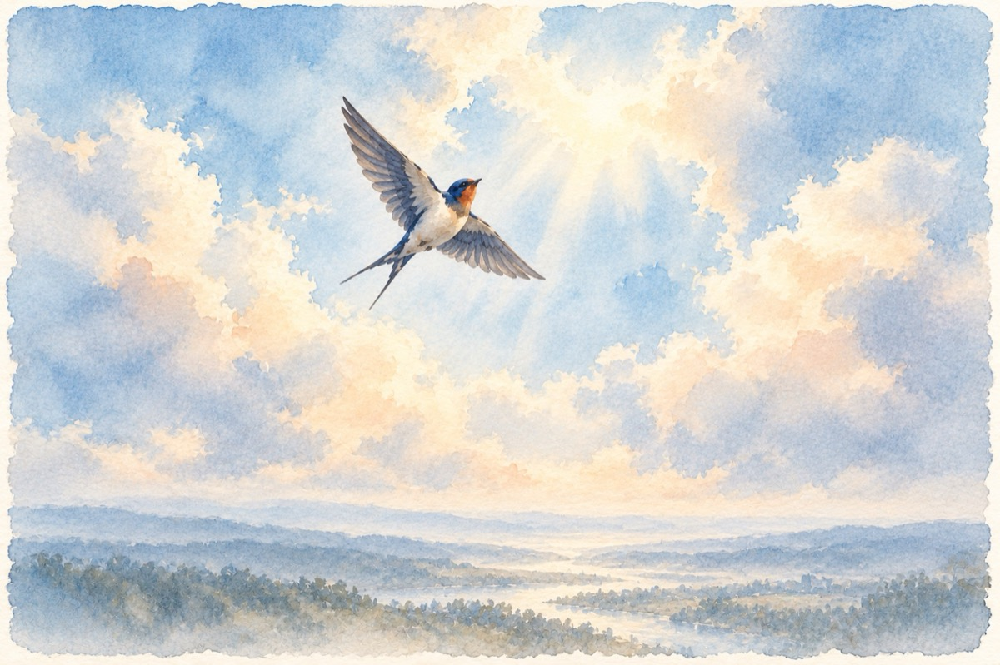

Anotimpurile poeziei
Poezia n-are timp
Este a lumii zeiță
Singurul ei anotimp
E-atunci când e iubită
Ea nu are nici hotare
E în beznă o lumină
Dacă lumea-i trecătoare –
Poezia e (divină) eternă.
Poezia e un cântec
Fără flaut, strune, tobe,
Poezia e-un descântec
Ce-i în suflet, nu în vorbe!
Poezia-i o comoară
Pe pământ în ape-n aer.
Cum o pasăre ea zboară
Ridicându-se la cer.
Poezia e o viață
Ce-i născută din trăiri
Ea-i puterea ce te-nalță
A rămâne-n nemuriri!
Vasile Groza
Apare și în: Privește-mă în ochi (2019), Privește-mă în ochi (2015), Poezii cu animale.